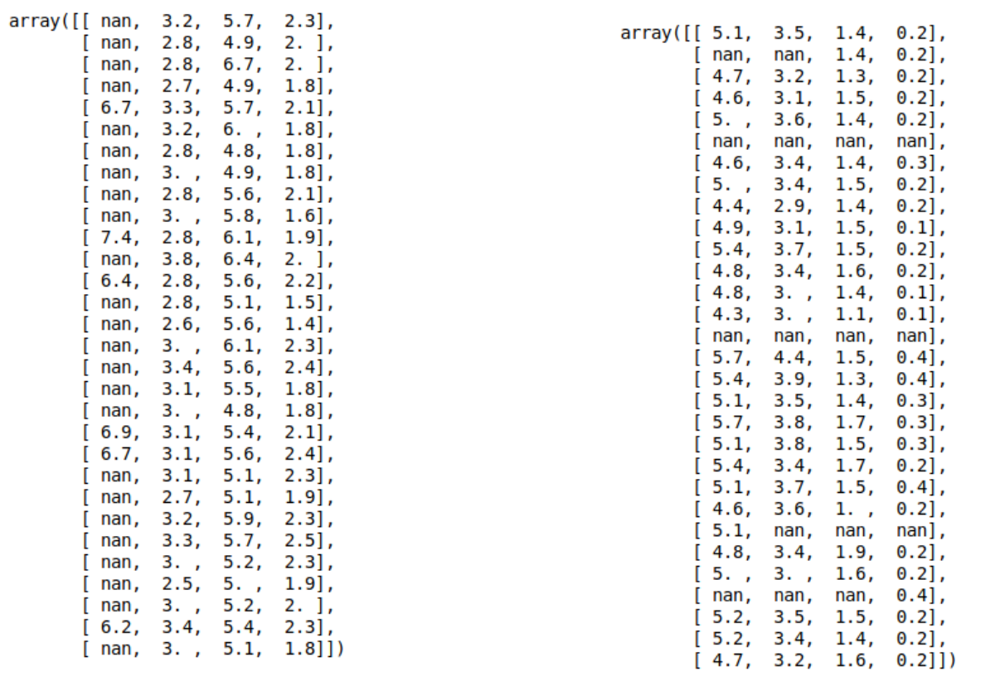
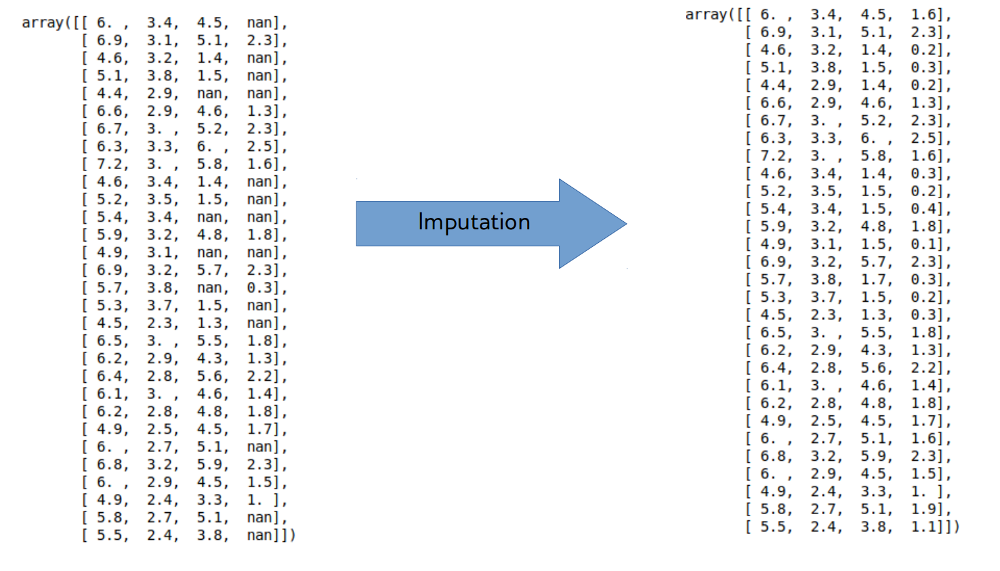
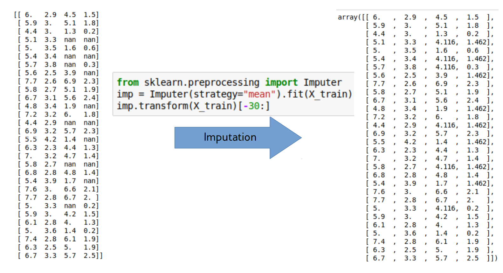
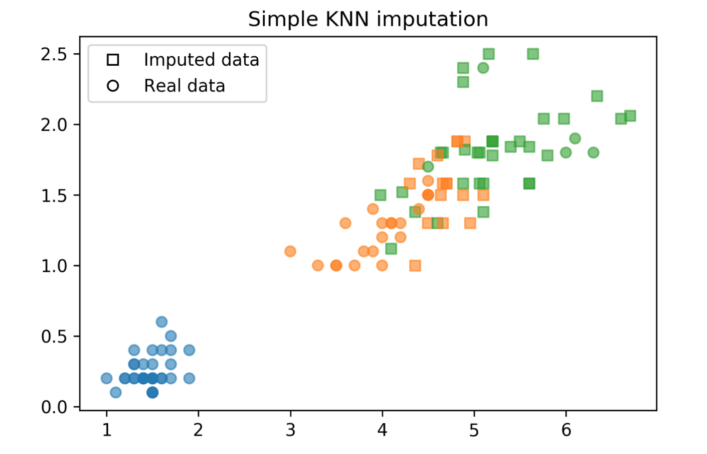
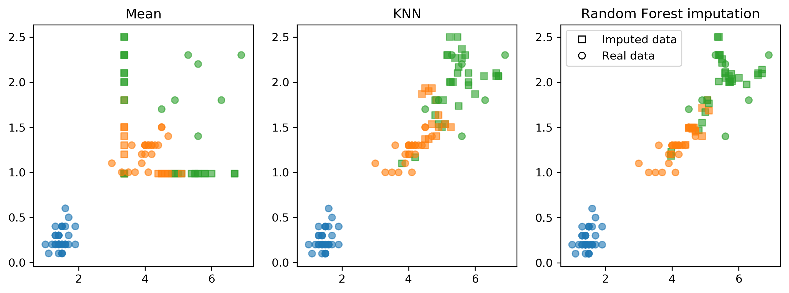
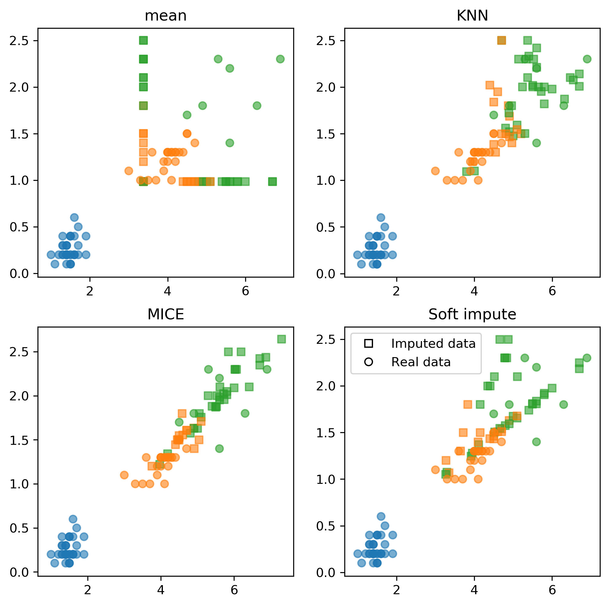

Preprocessing
09/09/2022
Robert Utterback (based on slides by Andreas Muller)
Preprocessing
Scaling
plt.figure()
plt.boxplot(X)
plt.xticks(np.arange(1, X.shape[1] + 1), features,
rotation=30, ha="right")
plt.ylabel("MEDV")
Scaling and Distances
Scaling and Distances
Ways to Scale Data

Sparse Data
- Data with many zeros — only store non-zero entries
- Subtracting anything will make data "dense" — often can't fit in memory
- Only scale, don't center (
MaxAbsScaler)
Standard Scaler Example
from sklearn.preprocessing import StandardScaler
X_train, X_test, y_train, y_test = \
train_test_split(X, y, random_state=0)
scaler = StandardScaler()
scaler.fit(X_train)
X_train_scaled = scaler.transform(X_train)
ridge = Ridge().fit(X_train_scaled, y_train)
X_test_scaled = scaler.transform(X_test)
print("{:.2f}".format(ridge.score(X_test_scaled, y_test)))
0.63
Importance of Scaling
Scikit-Learn API
Shortcuts:
est.fit_transform(X) == est.fit(X).transform(X)(mostly)est.fit_predict(X) == est.fit(X).predict(X)(mostly)
scores = cross_val_score(RidgeCV(), X_train, y_train, cv=10)
print2(np.mean(scores), np.std(scores))
(0.717, 0.125)
scores = cross_val_score(RidgeCV(), X_train_scaled, y_train, cv=10)
print2(np.mean(scores), np.std(scores))
(0.718, 0.127)
scores = cross_val_score(KNeighborsRegressor(), X_train, y_train, cv=10)
print2(np.mean(scores), np.std(scores))
(0.499, 0.146)
scores = cross_val_score(KNeighborsRegressor(), X_train_scaled, y_train, cv=10)
print2(np.mean(scores), np.std(scores))
(0.750, 0.106)
Preprocessing with Pipelines
A Common Error
print(X.shape)
(100, 10000)
# select most informative 5% of features
from sklearn.feature_selection import SelectPercentile, f_regression
select = SelectPercentile(score_func=f_regression, percentile=5)
select.fit(X, y)
X_selected = select.transform(X)
print(X_selected.shape)
(100, 500)
np.mean(cross_val_score(Ridge(), X_selected, y))
0.90
ridge = Ridge().fit(X_selected, y)
X_test_selected = select.transform(X_test)
ridge.score(X_test_selected, y_test)
-0.18
Leaking Information
# BAD!
select.fit(X, y) # includes the cv test parts!
X_sel = select.transform(X)
scores = []
for train, test in cv.split(X, y):
ridge = Ridge().fit(X_sel[train], y[train])
score = ridge.score(X_sel[test], y[test])
scores.append(score)
# GOOD!
scores = []
for train, test in cv.split(X, y):
select.fit(X[train], y[train])
X_sel_train = select.transform(X[train])
ridge = Ridge().fit(X_sel_train, y[train])
X_sel_test = select.transform(X[test])
score = ridge.score(X_sel_test, y[test])
scores.append(score)
Need to include preprocessing in cross-validation!
Leaking Information
Information leak:
No information leak:
- Need to include preprocessing in cross-validation!
X, y = boston.data, boston.target
X_train, X_test, y_train, y_test = \
train_test_split(X, y, random_state=0)
scaler = StandardScaler()
scaler.fit(X_train)
X_train_scaled = scaler.transform(X_train)
ridge = Ridge().fit(X_train_scaled, y_train)
X_test_scaled = scaler.transform(X_test)
print2(ridge.score(X_test_scaled, y_test))
(0.635)
from sklearn.pipeline import make_pipeline
pipe = make_pipeline(StandardScaler(), Ridge())
pipe.fit(X_train, y_train)
print2(pipe.score(X_test, y_test))
(0.635)
Pipelines
Undoing our feature selection mistake
# BAD!
select.fit(X, y) # includes the cv test parts!
X_sel = select.transform(X)
scores = []
for train, test in cv.split(X, y):
ridge = Ridge().fit(X_sel[train], y[train])
score = ridge.score(X_sel[test], y[test])
scores.append(score)
Same as:
select.fit(X, y)
X_selected = select.transform(X, y)
np.mean(cross_val_score(Ridge(), X_selected, y))
0.90
# GOOD!
scores = []
for train, test in cv.split(X, y):
select.fit(X[train], y[train])
X_sel_train = select.transform(X[train])
ridge = Ridge().fit(X_sel_train, y[train])
X_sel_test = select.transform(X[test])
score = ridge.score(X_sel_test, y[test])
scores.append(score)
Same as:
pipe = make_pipeline(select, Ridge())
np.mean(cross_val_score(pipe, X, y))
-0.079
Naming Steps
from sklearn.pipeline import make_pipeline
knn_pipe = make_pipeline(StandardScaler(),
KNeighborsRegressor())
print(knn_pipe)
Pipeline(steps=[('standardscaler', StandardScaler()),
('kneighborsregressor', KNeighborsRegressor())])
from sklearn.pipeline import Pipeline
pipe = Pipeline((("scaler", StandardScaler()),
("regressor", KNeighborsRegressor)))
Pipeline and GridSearchCV
knn_pipe = make_pipeline(StandardScaler(),
KNeighborsRegressor())
param_grid = \
{'kneighborsregressor__n_neighbors': range(1, 10)}
grid = GridSearchCV(knn_pipe, param_grid, cv=10)
grid.fit(X_train, y_train)
print(grid.best_params_)
print2(grid.score(X_test, y_test))
{'kneighborsregressor__n_neighbors': 7}
(0.600)
Going wild with Pipelines
from sklearn.datasets import load_diabetes
diabetes = load_diabetes()
X_train, X_test, y_train, y_test = train_test_split(
diabetes.data, diabetes.target, random_state=0)
from sklearn.preprocessing import PolynomialFeatures
pipe = make_pipeline(
StandardScaler(),
PolynomialFeatures(),
Ridge())
param_grid = {'polynomialfeatures__degree': [1, 2, 3],
'ridge__alpha': [0.001, 0.01, 0.1, 1, 10, 100]}
grid = GridSearchCV(pipe, param_grid=param_grid,
n_jobs=-1, return_train_score=True)
grid.fit(X_train, y_train)
Wilder
pipe = Pipeline([('scaler', StandardScaler()),
('regressor', Ridge())])
param_grid = {'scaler': [StandardScaler(), MinMaxScaler(),
'passthrough'],
'regressor': [Ridge(), Lasso()],
'regressor__alpha': np.logspace(-3, 3, 7)}
grid = GridSearchCV(pipe, param_grid)
grid.fit(X_train, y_train)
grid.score(X_test, y_test)
Wildest
from sklearn.tree import DecisionTreeRegressor
pipe = Pipeline([('scaler', StandardScaler()),
('regressor', Ridge())])
# check out searchgrid for more convenience
param_grid = [{'regressor': [DecisionTreeRegressor()],
'regressor__max_depth': [2, 3, 4],
'scaler': ['passthrough']},
{'regressor': [Ridge()],
'regressor__alpha': [0.1, 1],
'scaler': [StandardScaler(), MinMaxScaler(),
'passthrough']}
]
grid = GridSearchCV(pipe, param_grid)
grid.fit(X_train, y_train)
Feature Distributions
Transformed Features
Transformed Histograms
Power Transformations
\begin{equation}
bc_\lambda(x) =
\begin{cases}
\frac{x^\lambda - 1}{\lambda} & \text{ if $\lambda \ne 0$}\\
\log(x) & \text{ if $\lambda =0$}\\
\end{cases}
\end{equation}
Only applicable for positive \(x\)!
from sklearn.preprocessing import PowerTransformer
pt = PowerTransformer(method='box-cox')
# for any data: Yeo-Johnson
pt.fit(X)
Box-Cox on Boston
Before
After
Box-Cox Scatter
Before
After
Categorical Variables
Categorical Variables
df = pd.DataFrame({
'boro': ['Manhattan', 'Queens', 'Manhattan', 'Brooklyn', 'Brooklyn', 'Bronx'],
'salary': [103, 89, 142, 54, 63, 219],
'vegan': ['No', 'No','No','Yes', 'Yes', 'No']})
| boro | salary | vegan | |
|---|---|---|---|
| 0 | Manhattan | 103 | No |
| 1 | Queens | 89 | No |
| 2 | Manhattan | 142 | No |
| 3 | Brooklyn | 54 | Yes |
| 4 | Brooklyn | 63 | Yes |
| 5 | Bronx | 219 | No |
Ordinal Encoding
df['boro_ordinal'] = df.boro.astype("category").cat.codes
| boro | salary | vegan | boro_ordinal | |
|---|---|---|---|---|
| 0 | Manhattan | 103 | No | 2 |
| 1 | Queens | 89 | No | 3 |
| 2 | Manhattan | 142 | No | 2 |
| 3 | Brooklyn | 54 | Yes | 1 |
| 4 | Brooklyn | 63 | Yes | 1 |
| 5 | Bronx | 219 | No | 0 |
One-Hot (Dummy) Encoding
| boro | salary | vegan | |
|---|---|---|---|
| 0 | Manhattan | 103 | No |
| 1 | Queens | 89 | No |
| 2 | Manhattan | 142 | No |
| 3 | Brooklyn | 54 | Yes |
| 4 | Brooklyn | 63 | Yes |
| 5 | Bronx | 219 | No |
pd.get_dummies(df)
| salary | boro_Bronx | boro_Brooklyn | boro_Manhattan | boro_Queens | vegan_No | vegan_Yes | |
|---|---|---|---|---|---|---|---|
| 0 | 103 | 0 | 0 | 1 | 0 | 1 | 0 |
| 1 | 89 | 0 | 0 | 0 | 1 | 1 | 0 |
| 2 | 142 | 0 | 0 | 1 | 0 | 1 | 0 |
| 3 | 54 | 0 | 1 | 0 | 0 | 0 | 1 |
| 4 | 63 | 0 | 1 | 0 | 0 | 0 | 1 |
| 5 | 219 | 1 | 0 | 0 | 0 | 1 | 0 |
One-Hot (Dummy) Encoding
| boro | salary | vegan | |
|---|---|---|---|
| 0 | Manhattan | 103 | No |
| 1 | Queens | 89 | No |
| 2 | Manhattan | 142 | No |
| 3 | Brooklyn | 54 | Yes |
| 4 | Brooklyn | 63 | Yes |
| 5 | Bronx | 219 | No |
pd.get_dummies(df, columns=['boro'])
| salary | vegan | boro_Bronx | boro_Brooklyn | boro_Manhattan | boro_Queens | |
|---|---|---|---|---|---|---|
| 0 | 103 | No | 0 | 0 | 1 | 0 |
| 1 | 89 | No | 0 | 0 | 0 | 1 |
| 2 | 142 | No | 0 | 0 | 1 | 0 |
| 3 | 54 | Yes | 0 | 1 | 0 | 0 |
| 4 | 63 | Yes | 0 | 1 | 0 | 0 |
| 5 | 219 | No | 1 | 0 | 0 | 0 |
One-Hot (Dummy) Encoding
| boro | salary | vegan | |
|---|---|---|---|
| 0 | Manhattan | 103 | No |
| 1 | Queens | 89 | No |
| 2 | Manhattan | 142 | No |
| 3 | Brooklyn | 54 | Yes |
| 4 | Brooklyn | 63 | Yes |
| 5 | Bronx | 219 | No |
pd.get_dummies(df_ordinal, columns=['boro'])
| salary | vegan | boro_0 | boro_1 | boro_2 | boro_3 | |
|---|---|---|---|---|---|---|
| 0 | 103 | No | 0 | 0 | 1 | 0 |
| 1 | 89 | No | 0 | 0 | 0 | 1 |
| 2 | 142 | No | 0 | 0 | 1 | 0 |
| 3 | 54 | Yes | 0 | 1 | 0 | 0 |
| 4 | 63 | Yes | 0 | 1 | 0 | 0 |
| 5 | 219 | No | 1 | 0 | 0 | 0 |
df = pd.DataFrame({
'boro': ['Manhattan', 'Queens', 'Manhattan',
'Brooklyn', 'Brooklyn', 'Bronx'],
'salary': [103, 89, 142, 54, 63, 219],
'vegan': ['No', 'No','No','Yes', 'Yes', 'No']})
df_dummies = pd.get_dummies(df, columns=['boro'])
| salary | vegan | boro_Bronx | boro_Brooklyn | boro_Manhattan | boro_Queens | |
|---|---|---|---|---|---|---|
| 0 | 103 | No | 0 | 0 | 1 | 0 |
| 1 | 89 | No | 0 | 0 | 0 | 1 |
| 2 | 142 | No | 0 | 0 | 1 | 0 |
| 3 | 54 | Yes | 0 | 1 | 0 | 0 |
| 4 | 63 | Yes | 0 | 1 | 0 | 0 |
| 5 | 219 | No | 1 | 0 | 0 | 0 |
df = pd.DataFrame({
'boro': ['Brooklyn', 'Manhattan', 'Brooklyn',
'Queens', 'Brooklyn', 'Staten Island'],
'salary': [61, 146, 142, 212, 98, 47],
'vegan': ['Yes', 'No','Yes','No', 'Yes', 'No']})
df_dummies = pd.get_dummies(df, columns=['boro'])
| salary | vegan | boro_Brooklyn | boro_Manhattan | boro_Queens | boro_Staten Island | |
|---|---|---|---|---|---|---|
| 0 | 61 | Yes | 1 | 0 | 0 | 0 |
| 1 | 146 | No | 0 | 1 | 0 | 0 |
| 2 | 142 | Yes | 1 | 0 | 0 | 0 |
| 3 | 212 | No | 0 | 0 | 1 | 0 |
| 4 | 98 | Yes | 1 | 0 | 0 | 0 |
| 5 | 47 | No | 0 | 0 | 0 | 1 |
Pandas Categorial Columns
df = pd.DataFrame({
'boro': ['Manhattan', 'Queens', 'Manhattan',
'Brooklyn', 'Brooklyn', 'Bronx'],
'salary': [103, 89, 142, 54, 63, 219],
'vegan': ['No', 'No','No','Yes', 'Yes', 'No']})
df['boro'] = pd.Categorical(df.boro,
categories=['Manhattan', 'Queens', 'Brooklyn',
'Bronx', 'Staten Island'])
pd.get_dummies(df, columns=['boro'])
| salary | vegan | boro_Manhattan | boro_Queens | boro_Brooklyn | boro_Bronx | boro_Staten Island | |
|---|---|---|---|---|---|---|---|
| 0 | 103 | No | 1 | 0 | 0 | 0 | 0 |
| 1 | 89 | No | 0 | 1 | 0 | 0 | 0 |
| 2 | 142 | No | 1 | 0 | 0 | 0 | 0 |
| 3 | 54 | Yes | 0 | 0 | 1 | 0 | 0 |
| 4 | 63 | Yes | 0 | 0 | 1 | 0 | 0 |
| 5 | 219 | No | 0 | 0 | 0 | 1 | 0 |
OneHotEncoder
from sklearn.preprocessing import OneHotEncoder
df = pd.DataFrame({'salary': [103, 89, 142, 54, 63, 219],
'boro': ['Manhattan', 'Queens', 'Manhattan',
'Brooklyn', 'Brooklyn', 'Bronx']})
ce = OneHotEncoder().fit(df)
print(ce.transform(df).toarray())
[[0. 0. 0. 1. 0. 0. 0. 0. 1. 0.] [0. 0. 1. 0. 0. 0. 0. 0. 0. 1.] [0. 0. 0. 0. 1. 0. 0. 0. 1. 0.] [1. 0. 0. 0. 0. 0. 0. 1. 0. 0.] [0. 1. 0. 0. 0. 0. 0. 1. 0. 0.] [0. 0. 0. 0. 0. 1. 1. 0. 0. 0.]]
- always transforms all columns!
OneHotEncoder + ColumnTransformer
categorical = df.dtypes == object
preprocess = make_column_transformer(
(StandardScaler(), ~categorical),
(OneHotEncoder(), categorical))
model = make_pipeline(preprocess, LogisticRegression())
model
Pipeline(steps=[('columntransformer',
ColumnTransformer(transformers=[('standardscaler',
StandardScaler(),
salary True
boro False
dtype: bool),
('onehotencoder',
OneHotEncoder(),
salary False
boro True
dtype: bool)])),
('logisticregression', LogisticRegression())])

Dummy variables and colinearity
- One-hot is redundant (last one is 1 – sum of others)
- Can introduce co-linearity
- Can drop one
- Choice which one matters for penalized models
- Keeping all can make the model more interpretable
Models Supporting Discrete Features
- In principle:
- All tree-based models, naive Bayes
- In scikit-learn:
- Some Naive Bayes classifiers.
- In scikit-learn "soon":
- Decision trees, random forests, gradient boosting
Target Encoding (Impact Encoding)

Target Encoding (Impact Encoding)
- For high cardinality categorical features
- Instead of 70 one-hot variables, one “response encoded” variable.
- For regression: "average price in zip code”
- Binary classification: “building in this zip code have a likelihood p for class 1”
- Multiclass: One feature per class – probability distribution
More encodings for categorical features:
Load data, include ZIP code
from sklearn.datasets import fetch_openml
data = fetch_openml("house_sales", as_frame=True)
X = data.frame.drop(['date', 'price'], axis=1)
y = data.frame['price']
X_train, X_test, y_train, y_test = train_test_split(X, y)
X_train.columns
Index(['bedrooms', 'bathrooms', 'sqft_living', 'sqft_lot', 'floors',
'waterfront', 'view', 'condition', 'grade', 'sqft_above',
'sqft_basement', 'yr_built', 'yr_renovated', 'zipcode', 'lat', 'long',
'sqft_living15', 'sqft_lot15'],
dtype='object')
X_train.head()
| bedrooms | bathrooms | sqft_living | sqft_lot | floors | ... | zipcode | lat | long | sqft_living15 | sqft_lot15 | |
|---|---|---|---|---|---|---|---|---|---|---|---|
| 5945 | 4.0 | 2.25 | 1810.0 | 9240.0 | 2.0 | ... | 98055.0 | 47.4362 | -122.187 | 1660.0 | 9240.0 |
| 8423 | 3.0 | 2.50 | 1600.0 | 2788.0 | 2.0 | ... | 98031.0 | 47.4034 | -122.187 | 1720.0 | 3605.0 |
| 13488 | 4.0 | 2.50 | 1720.0 | 8638.0 | 2.0 | ... | 98003.0 | 47.2704 | -122.313 | 1870.0 | 7455.0 |
| 20731 | 2.0 | 2.25 | 1240.0 | 705.0 | 2.0 | ... | 98027.0 | 47.5321 | -122.073 | 1240.0 | 750.0 |
| 2358 | 3.0 | 2.00 | 1280.0 | 13356.0 | 1.0 | ... | 98042.0 | 47.3715 | -122.074 | 1590.0 | 8071.0 |
import category_encoders as ce
te = ce.TargetEncoder(cols='zipcode').fit(X_train, y_train)
te.transform(X_train).head()
| bedrooms | bathrooms | sqft_living | sqft_lot | floors | ... | zipcode | lat | long | sqft_living15 | sqft_lot15 | |
|---|---|---|---|---|---|---|---|---|---|---|---|
| 5945 | 4.0 | 2.25 | 1810.0 | 9240.0 | 2.0 | ... | 305061.113861 | 47.4362 | -122.187 | 1660.0 | 9240.0 |
| 8423 | 3.0 | 2.50 | 1600.0 | 2788.0 | 2.0 | ... | 303052.073892 | 47.4034 | -122.187 | 1720.0 | 3605.0 |
| 13488 | 4.0 | 2.50 | 1720.0 | 8638.0 | 2.0 | ... | 290589.201970 | 47.2704 | -122.313 | 1870.0 | 7455.0 |
| 20731 | 2.0 | 2.25 | 1240.0 | 705.0 | 2.0 | ... | 618687.511785 | 47.5321 | -122.073 | 1240.0 | 750.0 |
| 2358 | 3.0 | 2.00 | 1280.0 | 13356.0 | 1.0 | ... | 314250.081967 | 47.3715 | -122.074 | 1590.0 | 8071.0 |
y_train.groupby(X_train.zipcode).mean()[X_train.head().zipcode]
zipcode 98055.0 305061.113861 98031.0 303052.073892 98003.0 290589.201970 98027.0 618687.511785 98042.0 314250.081967 Name: price, dtype: float64
Results
X = data.frame.drop(['date', 'price', 'zipcode'], axis=1)
scores = cross_val_score(Ridge(), X, y)
print(f"{np.mean(scores):.2f}")
0.69
from sklearn.compose import make_column_transformer
from sklearn.preprocessing import OneHotEncoder
X = data.frame.drop(['date', 'price'], axis=1)
ct = make_column_transformer((OneHotEncoder(), ['zipcode']), remainder='passthrough')
pipe_ohe = make_pipeline(ct, Ridge())
scores = cross_val_score(pipe_ohe, X, y)
print(f"{np.mean(scores):.2f}")
0.53
pipe_target = make_pipeline(ce.TargetEncoder(cols='zipcode'), Ridge())
scores = cross_val_score(pipe_target, X, y)
print(f"{np.mean(scores):.2f}")
0.79
Imputation
Dealing with missing values


Imputation Methods
- Mean/Median
- kNN
- Regression models
- Probabilistic models
Baseline: Dropping Columns
from sklearn.linear_model import LogisticRegressionCV
X_train, X_test, y_train, y_test = \
train_test_split(X_, y, stratify=y)
nan_columns = np.any(np.isnan(X_train), axis=0)
X_drop_columns = X_train[:, ~nan_columns]
scores = cross_val_score(LogisticRegressionCV(v=5),
X_drop_columns, y_train, cv=10)
np.mean(scores)
0.772
Mean and Median


from sklearn.pipeline import make_pipeline
from sklearn.preprocessing import StandardScalar
nan_columns = np.any(np.isnan(X_train), axis = 0)
X_drop_columns = X_train[:,~nan_columns]
logreg = make_pipeline(StandardScalar(),
LogisticRegression())
scores = cross_val_score(logreg, X_drop_columns,
y_train, cv = 10)
print(np.mean(scores))
mean_pipe = make_pipeline(SimpleImputer(), StandardScalar(),
LogisticRegression())
scores = cross_val_score(mean_pipe, X_train, y_train, cv=10)
print(np.mean(scores))
0.794
0.729
kNN Imputation
- Find k nearest neighbors that have non-missing values.
- Fill in all missing values using the average of the neighbors.
sklearn.impute import KNNImputer
imputer = KNNImputer(n_neighbors=2)
imputer.fit_transform(X)
kNN Imputation Code
distances = np.zeros((X_train.shape[0], X_train.shape[0]))
for i, x1 in enumerate(X_train):
for j, x2 in enumerate(X_train):
dist = (x1 - x2) ** 2
nan_mask = np.isnan(dist)
distances[i, j] = dist[~nan_mask].mean() * X_train.shape[1]
neighbors = np.argsort(distances, axis=1)[:, 1:]
n_neighbors = 3
X_train_knn = X_train.copy()
for feature in range(X_train.shape[1]):
has_missing_value = np.isnan(X_train[:, feature])
for row in np.where(has_missing_value)[0]:
neighbor_features = X_train[neighbors[row], feature]
non_nan_neighbors = \
neighbor_features[~np.isnan(neighbor_features)]
X_train_knn[row, feature] = \
non_nan_neighbors[:n_neighbors].mean()
kNN Imputation Plot
scores = cross_val_score(logreg, X_train_knn, y_train, cv=10)
np.mean(scores)
0.849

Model-Driven Imputation
- Train regression model for missing values
- Possibly iterate: retrain after filling in
- Very flexible!
Model-driven imputation with RF
rf = RandomForestRegressor(n_estimators=100)
X_imputed = X_train.copy()
for i in range(10):
last = X_imputed.copy()
for feature in range(X_train.shape[1]):
inds_not_f = np.arange(X_train.shape[1])
inds_not_f = inds_not_f[inds_not_f != feature]
f_missing = np.isnan(X_train[:, feature])
rf.fit(X_imputed[~f_missing][:, inds_not_f],
X_train[~f_missing, feature])
X_imputed[f_missing, feature] = rf.predict(
X_imputed[f_missing][:, inds_not_f])
if (np.linalg.norm(last - X_imputed)) < .5:
break
scores = cross_val_score(logreg, X_imputed, y_train, cv=10)
np.mean(scores)
0.855
Imputation Method Comparison

Fancyimpute
!pip install fancyimputesklearn'sIterativeImputercan work well..fancyimputeprovides fancier features

Applying fancyimpute
from fancyimpute import IterativeImputer
imputer = IterativeImputer(n_iter=5)
X_complete = imputer.fit_transform(X_train)
scores = cross_val_score(logreg, X_train_fancy_mice,
y_train, cv=10)
np.mean(scores)
0.866